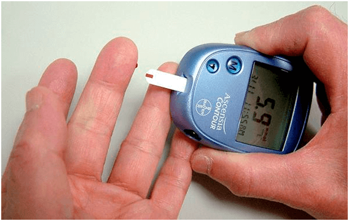
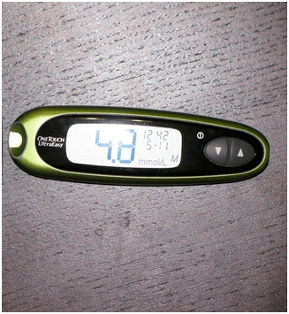

NEGOCIO de LA ENFERMEDAD:
sabréis sobre LA DIABETES todo lo que se ocultaba
durante muchos
años
Categoría: Artículos útiles para un diabético 
¡Hola! Me llamo Andrés Sanz.
Nunca he escrito los comentarios, pero he decidio hacerlo para tales como yo, diabéticos. Porque por mala praxis médica estaba a punto de perder la vida.
Tengo 35, tengo esposa y dos hijos. Trabajo de cocinero en un comedor escolar. Hace diez años me diagnosticaron la diabetes tipo 2. Todo el tiempo me sentía cansado, no podía alimentarme normalmente, me hacía comer vigilia solamente . ¡Y es con mi trabajo! Además tenía que controlar constantemente el nivel de glucosa en la sangre .

Mi día comenzaba desde la punción de un dedo y medición de la glucosa. Gastaba miles de euros al mes para los medicamentos. ¡Y es con el salario de cocinero! ¡Un desastre! Y más LOS PRECIOS de las pastillas en España HAN CRECIDO bastante por los últimos acontecimientos.

Tuve que vender la casa de campo y el coche, conseguir un préstamo, para pagar el tratamiento y comrar tiras reactivas… Estaba a punto de llevarme a la tumba toamdo todo esto. Tenía náuseas constantemente, y me engordé mucho durante un par de meses. Y más me volví una carga para mi familia. Vivía con miedo de lo que lo hijos tuvieran la diabtes tipo 2.
Pensaba que no podría ser peor ya, hasta que una vez un caso puso en peligro toda mi vida.
Compré un calzado nuevo y domandolo me hice callos en los pies. En algún tiempo se convertieron en las heridas que no se cicatrizaban. No sentía dolor, pero era difícil de andar, apareció el ardor en los pies , por eso fuí a visitar al médico. Dijo que la posibilidad del desarrollo de la gangrena era grande, y esto significó una cosa – podía PERDER LA PIERNA!!!

Empecé a sudar frío por lo oido. Sabía que la gangrena era un fenómeno bastante frecuente entre los diabéticos, pero pensé que tropezaría con eso. ¿Cómo podré a vivir y trabajar sin pierna!? Salí de la consulta del médico teniendo miedo enorme por mi vida y … una lista de medicamentos de unos 150 euros.
El mismo día por la noche llamé por skype a un amigo de colegio antiguo, vive en los EEUU. Estuvo escuchando mi pena sobre el problema con la salud, que faltaba dinero para los medicamentos. A su vez me contó que en el mercado de fármacos en los Estado Unídos la situación era similar. Sus médicos también recomendaban comprar medicamentos carísimos que no hacían más que perjudicar la salud. Es que CUANTO MÁS PERSONAS ESTÁN ENFERMAS, tanto MÁS PASTILLAS SE REQUIERE. Y su venta genera ingresos enormes para las empresas farmacéuticas . Creo que España no es una excepción tampoco en este sentido, simplemente todo esto se calla esmeradamente.

Pregunté a mi amigo, si sabía con que curaban la diabtes en los Estados Unidos, y me contó que todos ya rechazaban los medicamentos habituales a favor de los aditivos naturales . Su eficacia es varias veces más alta, y no perjudican la salud a diferencia de las pastillas. Practicamente todos los medicamentos conocidos contra la diabetes se reemplazan por un remedio especial - «» . Aquí en España ni siquiera oí de eso, por eso le pedí pasarme el enlace a este producto.
Aclaré que "" es un remedio orgánico en forma de polvo. Su componente principal es la inulina obtenida de la planta Heliánthus tuberósus . Durante siglos se utilizaba en la medicina oriental para normalizar el nivel de glucosa en la sangre. Después de numerosas investigaciones la ciencia moderna demostró la eficacia de este polisacárido en la lucha contra la diabetes tipo dos. ¡Y lo más principal es lo que la inulina en combinación con L-arginina ayuda a recuperar las células del páncreas que producen la insulina!

”” - es el único aditivo a base de este extracto. En caso de la diabetes tipo 2 baja el nivel de glucosa en la sangre , desminuye o elimina por completo (más un 20% de los enfermos) la necesidad de hipoglucemiantes , fortaleza los vasos sanguíneos y regula el metabolismo.
Se recomienda
utilizar"" tanto en combinación con una terápia
medicamentosa existente ya , como para LA PREVENCIÓN, si hay un riesgo del desarrollo de la
enfermedad.
Decidí probar””, ya que en aquel momento no tenía que perder, y pedí en
el sitio web del productor.
Así, por las mañanas echaba el agua tibia en el vaso, diluía una cucharadita rasa del polvo y bebía a sorbos pequeños. A decir francamente, no creía en el milagro. Y en vano… Después de una semana del uso noté, que me cansaba menos, poco a poco pude comer mi comida favorita . El nivel de azúcar en la sangre se normalizó (antes del uso de “” el nivel de glucosa en la sangre en ayunas era de 9,6 , dentro de dos semanas del uso – 5,4 después de la comida ) y las heridas en el pie se cicatrizaron. Ya no hablo del peso. ¡Bajé 4,5 kg!
br>No podía creer en los resultados… Y aquí está – una solución del problema para los diabéticos tipo 2. Desapareció el dolor y hormigueos, la preocupación por lo que como . No hay preocupaciones sobre las operaciones e inyecciones. NO NECESITO MÁS COMPRAR UN MONTÓN DE PASTILLAS. Vencí la diabetes sin productos de las empresas farmacéuticas mentirosas y consejos de los “expertos” así llamados.

Diré también que “” se vende solamente en internet , porque la industria no admite el aditivo al mercado y de todas maneras trata de desminuir sus ventas. Recordad que las empresas faramacéuticas no ven a vosotros como a los pacientes que pueden curarse... Sino ven a los clientes perpetuos en vosotros.
Y “” AHORRARÁ VUESTROS centenares de euros, que tendríais dar por un montón de medicamentos a las empresas farmacéuticas. Tened cuidado, a veces las falsificaciones penetran en España. Haced el pedido al ÚNICO destribuidor oficial en España, garantiza la calidad.

Espero que mi historia sea útil y salve más de una vida. ¡Qué tengáis buena salud!
Comentarios:
¡A estos con batas blancas sólo dejalos cortar! Un médido conocido me ha recomendado este remedio PARA LA PREVENCIÓN. Dicen que “” es el mejor remedio contra la diabetes. ¡Mirad, diré sobre mí, que antes de tomarlo la glucosa en ayunas era de 8.7, en un mes – 5.9 DESPUÉS DE LA COMIDA! Sigo tomandolo.
Gracias a Usted por escribir. Yo y mi marido ya hemos perdido la esperanza… He leido y he hecho el pedidoen este sitio web. ¡En un par de semanas he ido a examinarme – la insulina ha bajado desde 7.9 hasta 4.8!!!
También quiero escribir. He pensado que es una estafa más, hasta que me he convencido yo mismo. Estuve tomando durante un mes. Antes de utilizar este remedio la insulina era de 9,8 en ayunas, en un mes - 5.9 después de comer. ¡Vivo bien!
Hola, me llamo Elena. No padezco de la diabetes mellitus. Y mi padre es el diabético tipo 2 durante 15 años. Sugerid, por favor, ¿cómo luchar contra este problema? Quiero mucho a mi padre, y deseo que viva muchos años, simplemente no sé que haré si de repente… Aconsejad, como ayudarle, estaré muy agradecida
Pruebe darle un vaso de agua tibia con « » con sus medicamentos antes de comer. ¡No elimina los medicamentos habituales, pero difinitivamente ayudará a bajar el azúcar!
Mi papa tenía un problema parecido, pero no usa la insulina, solamente toma pastillas. El ha empezado a obedecer a la mamá, estar a dieta y ha empezado a tomar este aditivo, cuando ha dejado de sentir un dedo del pie…
¡Es un remedio económico! Estabamos adeudados hasta las cejas, el tratamiento del hijo era caro. En el trabajo una conocida ha recomendado probar “”. No he creido de lo que esto cambie algo, pero nunca se sabe. El hijito está sano ahora. Imaginaos, la insulina ha bajado desde 9,7 hasta 5.9!
Yo también tenía la diabetes tipo 2, era una carga para la familia. Mi hermana, la médica, ha encontrado el sitio web, donde se describe detalladamente el efecto de “” y su resultado positivo. ¡En seguida hemos pedido este aditivo, y me ha devuelto una vida normal!
Mi hermano padecía de la diabetes tipo 2. Me he desesperado, pero he hecho el pedido. ¡La última esperanza se ha cumplido! ¡ La glucosa era de 9,8 en ayunas, y en una semana del uso se ha vuelto de 5,3 DOS HORAS DESPUÉS DE COMER! Aquí está el enlace, donde he pedido “”.
Trabajo de médica en una clínica privada. Me han propuesto vender a los pacientes los medicaméntos por %, pero cómo se puede así... Mi mama estaba enferma de la diabetes tipo 2, hasta que he encontrado un remedio efectivo mediante el método de prueba y error. Los resultados son así: antes de tomar “” la glucosa en ayunas - 8.7. Después de 3 meses del uso - 5.9. Antes de tomar el fármaco la glucosa en la sangre - 9.8 dos horas después de la comida, y en 3 meses - 5.2 dos horas después de la comida. Creo que pronto dejaré de tomar los medicamentos en general.
¡Los médicos son canallas, se lucran solamente!!!!! ¿Cuánto se puede prescribir pastillas carísimas, cuando hay análogos baratos!?
Dónde estaba Usted antes con su artículo… Tengo la diabetes… :(
¡No os desesperéis! A mí me ayuda «». ¡Está comprobado en mí! Tomad este aditivo por las mañanas con los medicamentos principales para la prevención y todo se mejorará
¿Y cómo tomar este “” vuestro?
Yo echaba agua caliente en la taza, diluía para que estuviera tibia, luego echaba una cucharadita colmada de “”, mesclaba, tomaba por las mañanas en ayunas. Así de simple:)
Y yo lo tomaba en vez del té por las mañanas)) Baja el nivel de glucosa. Hace tres semanas tenía 7,6 por las mañanas, y ahora he medido - 5,2. Así, pués)
¿Quién ha tomado “”, contad, ¿qué tiene en su composición?
Me lo he pedido, en la caja pone: fibregum, inulina, áciso cítrico, vitamina B6, B1. Creo que todo esto es bueno, definitivamente no será peor.
¡Qué bueno que exista una variante así! Nunca he entendido para que comprar medicamentos a precios locos cuando hay fármacos no caros. Me jubilo, no puedo comprar mucho en la farmacias, por eso sí, es mejor no escuchar a estos esculapios con batas blancas, sino pensar con su propia cabeza
¡He enseñado “”a un amigo, el médico, él ha leido y se ha sorprendido de que no lo venden todavía aquí en España! Dice que todos los componentes de veras favorecen a la salud y bajan el nivel de la glucosa en la sangre. Para un diabético un solo este remedio puede reemplazar un botiquín entero.
Oh, Andrés, escriba, por favor, como están los resultados
Estaba tomando durante dos semanas. El azúcar ha bajado desde 7.1 hasta 4,8. ¡Hay que seguir definitivamente!!!